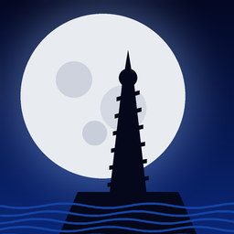

ATLANTIS
The Lost Tales · in your browser
◆
Seth, the queen's new guard, arrives in Atlantis just as Queen Rhea disappears. Atlantis Native is a new engine for Cryo's 1997 adventure: the whole game, faithful to the original, playable here.
It does not include the game itself: its pictures, videos, voices and music belong to its publisher, so it plays them from your own copy. Choose the folder of your game:
- GOG.com: the folder where the game is installed.
- CD: a folder holding
atlantis.exeandBIGCD1.BIGtoBIGCD4.BIG, copied from the four discs.
Your files stay on your computer: the browser only reads them, and the players and saves are kept in this browser. How to get the game files. Best with a mouse and a keyboard; F10 opens the options, F11 the full screen.